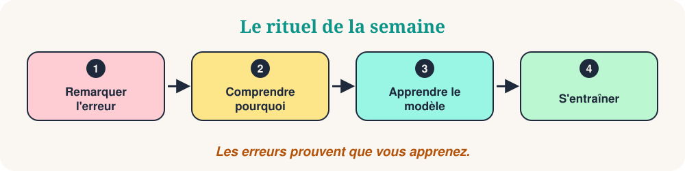

Bienvenue dans Erreurs du Samedi. Chaque semaine, nous regardons cinq petites erreurs que font les apprenants, nous comprenons pourquoi elles arrivent et nous les remplaçons par un modèle naturel. Les erreurs ne sont pas un problème. Elles prouvent que vous apprenez.
Cette semaine : cinq erreurs fréquentes en français. Chaque erreur suit les mêmes étapes : la phrase qui n'est pas tout à fait correcte, la meilleure phrase, la raison, une règle simple et un mini-quiz. Remarquez le modèle, pas seulement la phrase.

Les cinq erreurs du jour
- L'accord de l'adjectif
- Il faut / il fait
- Étrange / étranger
- Quantité + de
- Présent ou passé ?
L'accord de l'adjectif
Marie dit : « Je suis très heureux. »
Marie dit : « Je suis très heureuse. »
Pourquoi cette erreur. Dans beaucoup de langues, l'adjectif ne change pas. En français, il change avec la personne ou la chose décrite.
La règle COSY. L'adjectif s'accorde en genre et en nombre : heureux → heureuse, content → contente. Apprenez souvent les deux formes ensemble.
- Il est heureux. / Elle est heureuse.
- Il est content. / Elle est contente.
- Ils sont fatigués.
❓ Ma sœur est très…
« Ma sœur » est féminin singulier : heureuse.
Il faut / il fait
« Il fait manger avant de partir. »
« Il faut manger avant de partir. »
Pourquoi cette erreur. Les deux mots se ressemblent à l'écrit, mais ils ne se prononcent pas pareil : il faut [fo] et il fait [fɛ].
La règle COSY. Il faut + infinitif exprime une nécessité. Il fait parle du temps (il fait froid) ou d'une action (il fait ses devoirs).
- Il faut dormir.
- Il faut boire de l'eau.
- Il fait froid ce matin.
❓ Il est nécessaire de se reposer :
Pour une nécessité : il faut + infinitif (se reposer).
Étrange / étranger
« J'ai un ami étrange du Japon. »
« J'ai un ami étranger du Japon. »
Pourquoi cette erreur. Les deux mots se ressemblent beaucoup, mais ils n'ont pas le même sens.
La règle COSY. Étrange = bizarre, inhabituel. Étranger = qui vient d'un autre pays.
- Un bruit étrange.
- Un étudiant étranger.
- Une langue étrangère.
❓ Un étudiant qui vient du Japon :
Il vient d'un autre pays et « étudiant » est masculin : étranger.
Quantité + de
« Je veux assez argent. »
« Je veux assez d'argent. »
Pourquoi cette erreur. Après un mot de quantité, le français met toujours « de » avant le nom.
La règle COSY. beaucoup de, trop de, assez de, peu de + nom. Devant une voyelle : d'.
- Beaucoup de travail.
- Assez de temps.
- Beaucoup d'eau.
❓ Beaucoup ___ eau.
« Eau » commence par une voyelle : beaucoup d'eau.
Présent ou passé ?
« Hier soir, je regarde un film. »
« Hier soir, j'ai regardé un film. »
Pourquoi cette erreur. Des mots comme « hier » ou « ce matin » annoncent une action terminée. Le verbe doit être au passé.
La règle COSY. Habitude → présent. Projet → futur proche. Action terminée → passé composé.
- Je regarde mes e-mails le soir.
- Je vais regarder mes e-mails.
- J'ai regardé mes e-mails hier.
❓ Hier soir, ___ un film.
« Hier soir » = action terminée : j'ai regardé.
Votre entraînement de 10 minutes
- Choisissez deux erreurs que vous faites parfois.
- Écrivez trois nouvelles phrases pour chacune, avec la règle.
- Dites-les à voix haute et enregistrez-vous.
- Comparez vos phrases avec les exemples ci-dessus.
- La semaine prochaine, repérez les mêmes modèles dans de vraies conversations.
À retenir
Remarquez le modèle. Entraînez-vous. Faites-le vôtre. Quelle réponse vous a surpris ? Notez-la et utilisez-la dans une phrase aujourd'hui.
“Les erreurs font partie de l'apprentissage.”